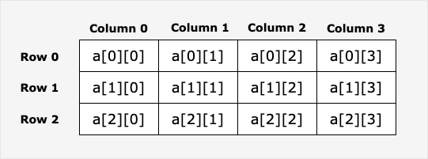
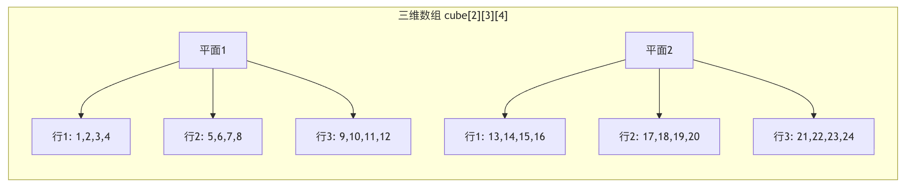

Go Language Multidimensional Arrays
A multidimensional array is an array of arrays. Think of it as aData tableorMatrix, where each element can be accessed via multiple indices.
Multidimensional arrays in Go can be used to handle structured information such as tabular data, matrix operations, or game boards.
Basic concepts
- One-dimensional array: like points on a straight line, only one coordinate (index) is needed to find a specific element
- Two-dimensional array: like a table, requiring two coordinates: row and column
- Three-dimensional array: like a cube, requiring three coordinates: length, width, and height
- Higher dimensions: theoretically can have many dimensions, but in practice two-dimensional and three-dimensional arrays are most commonly used
This can be compared to our everyday parking spaces:
- One-dimensional array= a row of parking spaces (only need the parking space number)
- Two-dimensional array= a multi-story parking lot (need the floor and parking space number)
- Three-dimensional array= multiple multi-story parking lots (need the parking lot number, floor, and parking space number)
Go supports multidimensional arrays. The following are common ways to declare multidimensional arrays:
var variable_name [SIZE1][SIZE2]...[SIZEN] variable_type
Declaration and initialization:
// Declare a two-dimensional array var arrayName [rows][cols]elementType // Declare and initialize var arrayName [rows][cols]elementType = [rows][cols]elementType{initialValues}The following example declares a three-dimensional integer array:
var threedim [5][10][4]int
Two-dimensional array
A two-dimensional array is the simplest multidimensional array. A two-dimensional array is essentially composed of one-dimensional arrays. The way to define a two-dimensional array is as follows:
var arrayName [ x ][ y ] variable_type
variable_type is the data type in Go, arrayName is the array name. A two-dimensional array can be considered a table, with x as rows and y as columns. The following diagram shows a two-dimensional array a with three rows and four columns:

Elements in a two-dimensional array can be accessed viaa[ i ][ j ]to access.
Example
import "fmt"
func main() {
// Step 1: Create an array
values := [][]int{}
// Step 2: Use the append() function to add two rows of one-dimensional arrays to an empty two-dimensional array
row1 := []int{1, 2, 3}
row2 := []int{4, 5, 6}
values = append(values, row1)
values = append(values, row2)
// Step 3: Display two rows of data
fmt.Println("Row 1")
fmt.Println(values[0])
fmt.Println("Row 2")
fmt.Println(values[1])
// Step 4: Access the first element
fmt.Println("First element:")
fmt.Println(values[0][0])
}
The output of the above example is:
Row 1 [1 2 3] Row 2 [4 5 6] 第一个元素为： 1
Initializing a two-dimensional array
Multidimensional arrays can be initialized with braces. The following example is a two-dimensional array with 3 rows and 4 columns:
a := [3][4]int{
{0, 1, 2, 3} , /* 第一行索引为 0 */
{4, 5, 6, 7} , /* 第二行索引为 1 */
{8, 9, 10, 11}, /* 第三行索引为 2 */
}
Note:In the above code, the second-to-last line}must have a comma, because the last line's}It doesn't have to be on a single line; it can also be written like this:a := [3][4]int{
{0, 1, 2, 3} , /* 第一行索引为 0 */
{4, 5, 6, 7} , /* 第二行索引为 1 */
{8, 9, 10, 11}} /* 第三行索引为 2 */
The following example initializes a two-dimensional array with 2 rows and 2 columns:
Example
import "fmt"
func main() {
// Create a two-dimensional array
sites := [2][2]string{}
// Add elements to the two-dimensional array
sites[0][0] = "Google"
sites[0][1] = "Runoob"
sites[1][0] = "Taobao"
sites[1][1] = "Weibo"
// Display the result
fmt.Println(sites)
}
The output of the above example is:
[[Google Runoob] [Taobao Weibo]]
Accessing a two-dimensional array
A two-dimensional array is accessed by specifying coordinates, such as the row index and column index in the array. For example:
val := a[2][3] 或 var value int = a[2][3]
The above example accessed the fourth element in the third row of the two-dimensional array val.
A two-dimensional array can use nested loops to output elements:
Example
import "fmt"
func main() {
/* Array - 5 rows 2 columns*/
var a = [5][2]int{ {0,0}, {1,2}, {2,4}, {3,6},{4,8}}
var i, j int
/* output array elements */
for i = 0; i < 5; i++ {
for j = 0; j < 2; j++ {
fmt.Printf("a[%d][%d] = %d\n", i,j, a[i][j] )
}
}
}
The output of the above example is:
a[0][0] = 0 a[0][1] = 0 a[1][0] = 1 a[1][1] = 2 a[2][0] = 2 a[2][1] = 4 a[3][0] = 3 a[3][1] = 6 a[4][0] = 4 a[4][1] = 8
The following example creates a multidimensional array where the number of elements in each dimension is inconsistent:
Example
import "fmt"
func main() {
// Create an empty two-dimensional array
animals := [][]string{}
// Create three one-dimensional arrays, each with different lengths
row1 := []string{"fish", "shark", "eel"}
row2 := []string{"bird"}
row3 := []string{"lizard", "salamander"}
// Use the append() function to add a one-dimensional array to the two-dimensional array
animals = append(animals, row1)
animals = append(animals, row2)
animals = append(animals, row3)
// Loop to output
for i := range animals {
fmt.Printf("Row: %v\n", i)
fmt.Println(animals[i])
}
}
The output of the above example is:
Row: 0 [fish shark eel] Row: 1 [bird] Row: 2 [lizard salamander]
Accessing and Modifying Array Elements
Access Elements
Example
import "fmt"
func main() {
// Create a 3x3 matrix
matrix := [3][3]int{
{1, 2, 3},
{4, 5, 6},
{7, 8, 9},
}
// Access a single element
fmt.Println("Row 1, Column 2:", matrix[0][1]) // Output: 2
fmt.Println("Row 3, Column 3:", matrix[2][2]) // Output: 9
// Access the entire row
fmt.Println("Row 2:", matrix[1]) // Output: [4 5 6]
// Traverse all elements
fmt.Println("\nTraverse all elements:")
for i := 0; i < 3; i++ {
for j := 0; j < 3; j++ {
fmt.Printf("matrix[%d][%d] = %d\n", i, j, matrix[i][j])
}
}
}
modify elements
Example
import "fmt"
func main() {
// Create a 2x2 zero matrix
var grid [2][2]int
fmt.Println("Matrix before modification:", grid)
// Modify the element at a specific position
grid[0][0] = 10
grid[0][1] = 20
grid[1][0] = 30
grid[1][1] = 40
fmt.Println("Matrix after modification:", grid)
// Batch modify a row
grid[0] = [2]int{100, 200}
fmt.Println("After modifying the first row:", grid)
}
Three-Dimensional and Higher-Dimensional Arrays
Example of a three-dimensional array
Example
import "fmt"
func main() {
// Declare a 2x3x4 three-dimensional array
// Can be understood as: 2 planes, each with 3 rows and 4 columns
var cube [2][3][4]int
// Initialize 3D array
cube = [2][3][4]int{
{ // The first plane
{1, 2, 3, 4},
{5, 6, 7, 8},
{9, 10, 11, 12},
},
{ // The second plane
{13, 14, 15, 16},
{17, 18, 19, 20},
{21, 22, 23, 24},
},
}
// Access 3D array elements
fmt.Println("cube[0][1][2] =", cube[0][1][2]) // Output: 7
fmt.Println("cube[1][2][3] =", cube[1][2][3]) // Output: 24
// Traverse a 3D array
fmt.Println("\nThree-dimensional array content:)
for i := 0; i < 2; i++ {
fmt.Printf("Plane %d:\n", i)
for j := 0; j < 3; j++ {
for k := 0; k < 4; k++ {
fmt.Printf("%3d ", cube[i][j][k])
}
fmt.Println()
}
fmt.Println()
}
}
see figure below:

Common Operations on Multidimensional Arrays
1. Iterating with range
Example
import "fmt"
func main() {
// Create a 2D array
scores := [3][4]int{
{85, 90, 78, 92},
{88, 76, 95, 89},
{92, 85, 88, 90},
}
fmt.Println("Student grade table:")
// Use range to iterate over the 2D array
for i, row := range scores {
fmt.Printf("Student %d's grades: ", i+1)
for j, score := range row {
fmt.Printf("%d ", score)
// If you need both index and value
_ = j // Avoid unused variable warning
}
fmt.Println()
}
// Only care about the value, not the index
total := 0
count := 0
for _, row := range scores {
for _, score := range row {
total += score
count++
}
}
fmt.Printf("\nAverage score: %.2f\n", float64(total)/float64(count))
}
2. Getting the Array Length
Example
import "fmt"
func main() {
// Create an irregular multi-dimensional array
jagged := [3][3]int{
{1, 2, 3},
{4, 5},
{6, 7, 8, 9}, // Note: This will cause a compilation error because each row must have the same length
}
// Correct example: Get array dimensions
matrix := [4][5]int{}
// Get the number of rows
rows := len(matrix)
fmt.Println("Rows:", rows) // Output: 4
// Get the number of columns in the first row (all rows have the same length)
cols := len(matrix[0])
fmt.Println("Columns:", cols) // Output: 5
// Get the total number of elements
totalElements := rows * cols
fmt.Println("Total elements:", totalElements) // Output: 20
}
3. Array comparison
Example
import "fmt"
func main() {
// Create two identical 2D arrays
a := [2][2]int{{1, 2}, {3, 4}}
b := [2][2]int{{1, 2}, {3, 4}}
c := [2][2]int{{1, 2}, {3, 5}}
// Arrays can be compared directly (only when dimensions are exactly the same)
fmt.Println("a == b:", a == b) // Output: true
fmt.Println("a == c:", a == c) // Output: false
// Note: Arrays of different dimensions cannot be compared
// d := [2][3]int{{1, 2, 3}, {4, 5, 6}}
// fmt.Println(a == d) // Compile error: type mismatch
}
Practical application scenarios
Scenario 1: Game Board (Tic-Tac-Toe)
Example
import "fmt"
func main() {
// Initialize a 3x3 tic-tac-toe board
var board [3][3]string
// Initialize as empty
for i := 0; i < 3; i++ {
for j := 0; j < 3; j++ {
board[i][j] = " "
}
}
// Simulate moves
board[0][0] = "X"
board[1][1] = "O"
board[2][2] = "X"
// Print the board
fmt.Println("Tic-tac-toe board:")
for i := 0; i < 3; i++ {
for j := 0; j < 3; j++ {
fmt.Printf(" %s ", board[i][j])
if j < 2 {
fmt.Printf("|")
}
}
fmt.Println()
if i < 2 {
fmt.Println("---+---+---")
}
}
}
Scenario 2: Student Grade Management System
Example
import "fmt"
func main() {
// Define: 3 students, each student has 4 courses
var grades [3][4]float64
// Input student scores
grades = [3][4]float64{
{85.5, 90.0, 78.5, 92.0}, // Student 1's scores
{88.0, 76.5, 95.0, 89.5}, // Student 2's scores
{92.5, 85.0, 88.5, 90.0}, // Student 3's scores
}
// Calculate each student's average score
fmt.Println("Student score statistics:")
for i, studentGrades := range grades {
sum := 0.0
for _, grade := range studentGrades {
sum += grade
}
average := sum / float64(len(studentGrades))
fmt.Printf("Student %d: average score = %.2f\n", i+1, average)
}
// Calculate each course's average score
fmt.Println("\nCourse average score:")
for j := 0; j < 4; j++ {
sum := 0.0
for i := 0; i < 3; i++ {
sum += grades[i][j]
}
average := sum / 3.0
fmt.Printf("Course %d: average score = %.2f\n", j+1, average)
}
}
Scenario 3: Image Pixel Processing
Example
import "fmt"
func main() {
// Simulate a simple 3x3 grayscale image
// Each pixel value range: 0(black) ~ 255(white)
var image [3][3]int
// Initialize the image (a simple gradient)
for i := 0; i < 3; i++ {
for j := 0; j < 3; j++ {
image[i][j] = (i + j) * 50
}
}
// Display the original image
fmt.Println("Original image:")
displayImage(image)
// Image processing: increase brightness
fmt.Println("\nImage after brightness increase:")
for i := 0; i < 3; i++ {
for j := 0; j < 3; j++ {
// Increase brightness, but do not exceed 255
newValue := image[i][j] + 50
if newValue > 255 {
newValue = 255
}
image[i][j] = newValue
}
}
displayImage(image)
}
func displayImage(img [3][3]int) {
for i := 0; i < 3; i++ {
for j := 0; j < 3; j++ {
fmt.Printf("%3d ", img[i][j])
}
fmt.Println()
}
}
Notes and Best Practices
1. Array Length Is Part of the Type
Example
import "fmt"
func main() {
// These two are different types!
var a [2][3]int
var b [3][2]int
// The following code will cause a compilation error
// a = b // error: type mismatch
fmt.Printf("a's type: %T\n", a) // [2][3]int
fmt.Printf("b's type: %T\n", b) // [3][2]int
}
2. Value Type vs Reference Type
Example
import "fmt"
func main() {
// Arrays are value types
original := [2][2]int{{1, 2}, {3, 4}}
// Assignment creates a copy
copy := original
// Modifying the copy does not affect the original array
copy[0][0] = 100
fmt.Println("Original array:", original) // [[1 2] [3 4]]
fmt.Println("Copy array:", copy) // [[100 2] [3 4]]
// If you need reference semantics, you can use slices (introduced in later articles)
}
3. Performance considerations
- Contiguous memory: multidimensional arrays are stored contiguously in memory, providing fast access
- Fixed size: the length of an array is determined at compile time and cannot be changed dynamically
- Suitable scenarios: when the data size is known and fixed, arrays are the best choice
Frequently Asked Questions
Q1: What is the difference between a multidimensional array and a nested slice?
| Features | Multidimensional arrays | Nested slices |
|---|---|---|
| Size | Fixed, determined at compile time | Dynamic, variable at runtime |
| Memory | Contiguous allocation | Possibly non-contiguous |
| Performance | Fast access speed | Slightly slower, has extra overhead |
| Use Case | Data size known | Data size variable |
Q2: How do you create a ragged two-dimensional array?
Go arrays require each row to have the same length. If you need a ragged structure, you should use slices:
Example
irregular := [][]int{
{1, 2, 3},
{4, 5}, // This line has only 2 elements
{6, 7, 8, 9}, // This line has 4 elements
}
Q3: Can a multidimensional array be used as a function parameter?
Yes, but note that arrays are value types, and passing large arrays incurs a performance cost:
Example
// Process the matrix...
matrix[0][0] = 100
return matrix
}
// A better way is to use pointers or slices
func processMatrixPtr(matrix *[3][3]int) {
matrix[0][0] = 100
}